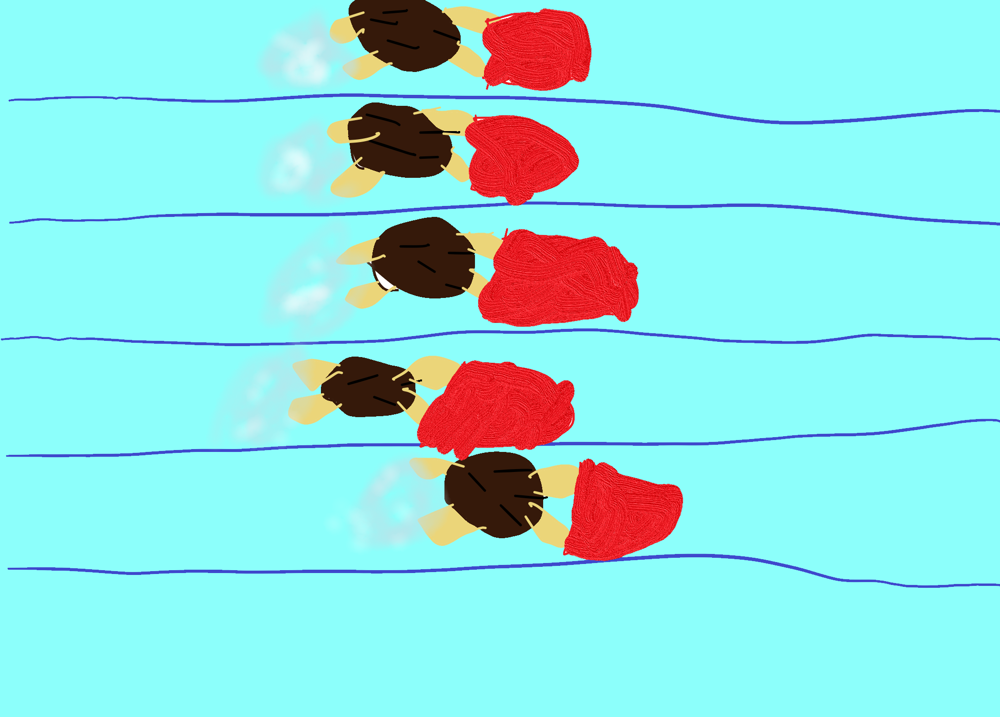

Once you graduate from Level 5, you can test for a swim team. The test involves a 50 freestyle, a 50 backstroke, and a 25 breaststroke. Practices are held 4 days a week, 1 hour each day. If you pass the test, you will recieve a swim cap with the teams name and logo. You have to be at least 1 year old to join a swim team. Contact the swim team teacher for more info.
